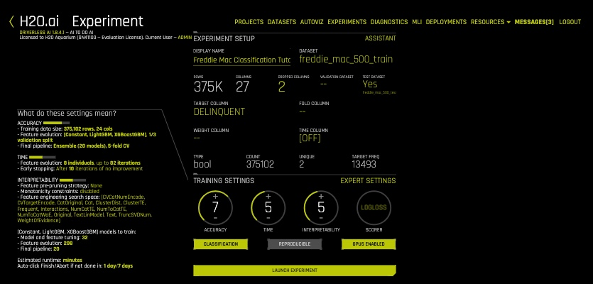
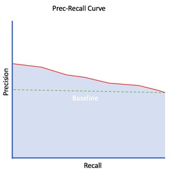
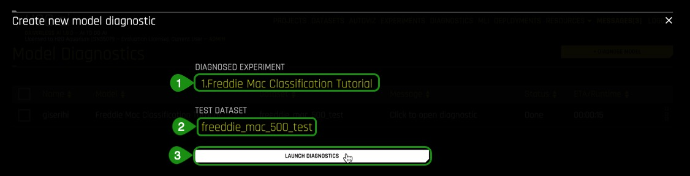

Many tools, such as ROC and Precision-Recall Curves, are available to evaluate how good or bad a classification model is predicting outcomes. In this tutorial, we will use a subset of the Freddie Mac Single-Family Loan-Level dataset to build a classification model and use it to predict if a loan will become delinquent. Through H2O's Driverless AI Diagnostic tool, we will explore the financial impacts the false positive and false negative predictions have while exploring tools like ROC Curve, Prec-Recall, Gain and Lift Charts, K-S Chart. Finally, we will explore a few metrics such as AUC, F-Scores, GINI, MCC, and Log Loss to assist us in evaluating the performance of the generated model.
Note: We recommend that you go over the entire tutorial first to review all the concepts, that way, once you start the experiment, you will be more familiar with the content.
You will need the following to be able to do this tutorial:
- Basic knowledge of Machine Learning and Statistics
- A Driverless AI environment
- Basic knowledge of Driverless AI or doing the Automatic Machine Learning Introduction with Drivereless AI Test Drive
- A Two-Hour Test Drive session : Test Drive is H2O.ai's Driverless AI on the AWS Cloud. No need to download software. Explore all the features and benefits of the H2O Automatic Learning Platform.
- Need a Two-Hour Test Drive session?Follow the instructions on this quick tutorial to get a Test Drive session started.
Note: Aquarium's Driverless AI Test Drive lab has a license key built-in, so you don't need to request one to use it. Each Driverless AI Test Drive instance will be available to you for two hours, after which it will terminate. No work will be saved. If you need more time to further explore Driverless AI, you can always launch another Test Drive instance or reach out to our sales team via the contact us form.
About the Dataset
This dataset contains information about "loan-level credit performance data on a portion of fully amortizing fixed-rate mortgages that Freddie Mac bought between 1999 to 2017. Features include demographic factors, monthly loan performance, credit performance including property disposition, voluntary prepayments, MI Recoveries, non-MI recoveries, expenses, current deferred UPB and due date of last paid installment."[1]
[1] Our dataset is a subset of the Freddie Mac Single-Family Loan-Level Dataset. It contains 500,000 rows and is about 80 MB.
The subset of the dataset this tutorial uses has a total of 27 features (columns) and 500,137 loans (rows).
Download the Dataset
Download H2O's subset of the Freddie Mac Single-Family Loan-Level dataset to your local drive and save it at as csv file.
Launch Experiment
1. Load the loan_level.csv to Driverless AI by clicking Add Dataset (or Drag and Drop) on the Datasets overview page. Click on Upload File, then select loan_level.csv file. Once the file is uploaded, select Details.

Note: You will see four more datasets, but you can ignore them, as we will be working with the loan_level_500k.csv file.
2. Let's take a quick look at the columns:
 Things to Note:
Things to Note:
- C1 - CREDIT_SCORE
- C2 - FIRST_PAYMENT_DATE
- C3 - FIRST_TIME_HOMEBUYER_FLAG
- C4 - MATURITY_DATE
- C5 - METROPOLITAN_STATISTICAL_AREA
- C6 - MORTGAGE_INSURANCE_PERCENTAGE
- C7 - NUMBER_OF_UNITS
3. Continue scrolling through the current page to see more columns (image is not included)
- C8 - OCCUPANCY_STATUS
- C9 - ORIGINAL_COMBINED_LOAN_TO_VALUE
- C10 - ORIGINAL_DEBT_TO_INCOME_RATIO
- C11 - ORIGINAL_UPB
- C12 - ORIGINAL_LOAN_TO_VALUE
- C13 - ORIGINAL_INTEREST_RATE
- C14 - CHANNEL
- C15 - PREPAYMENT_PENALTY_MORTGAGE_FLAG
- C16 -PRODUCT_TYPE
- C17- PROPERTY_STATE
- C18 - PROPERTY_TYPE
- C19 - POSTAL_CODE
- C20 - LOAN_SEQUENCE_NUMBER
- C21 - LOAN_PURPOSE**
- C22 - ORIGINAL_LOAN_TERM
- C23 - NUMBER_OF_BORROWERS
- C24 - SELLER_NAME
- C25 - SERVICER_NAME
- C26 - PREPAID Drop
- C27 - DELINQUENT- This column is the label we are interested in predicting where False -> not defaulted and True->defaulted
4. Return to the Datasets overview page
5. Click on the loan_level_500k.csv file then split

6. Split the data into two sets: freddie_mac_500_train and freddie_mac_500_test. Use the image below as a guide:
 Things to Note:
Things to Note:
- Type
freddie_mac_500_trainfor OUTPUT NAME 1, this will serve as the training set - Type
freddie_mac_500_testfor OUTPUT NAME 2, this will serve as the test set - For Target Column select Delinquent
- You can set the Random Seed to any number you'd like, we chose 42, by choosing a random seed we will obtain a consistent split
- Change the split value to .75 by adjusting the slider to 75% or entering .75 in the section that says Train/Valid Split Ratio
- Save
The training set contains 375k rows, each row representing a loan, and 27 columns representing the attributes of each loan including the column that has the label we are trying to predict.
Note: the actual data in training and test split vary by user, as the data is split randomly. The Test set contains 125k rows, each row representing a loan, and 27 attribute columns representing attributes of each loan.
7. Verify that there are three datasets, freddie_mac_500_test, freddie_mac_500_train and loan_level_500k.csv:

8. Click on the freddie_mac_500_train file then select Predict.
9. Select Not Now on the First time Driverless AI, Click Yes to get a tour!. A similar image should appear:

Name your experiment Freddie Mac Classification Tutorial
10. Select Dropped Cols, drop the following 2 columns:
- Prepayment_Penalty_Mortgage_Flag
- PREPAID
- Select Done
These two columns are dropped because they are both clear indicators that the loans will become delinquent and will cause data leakage.

11. Select Target Column, then select Delinquent
12. Select Test Dataset, then freddie_mac_500_test

13. A similar Experiment page should appear:

On task 2, we will explore and update the Experiment Settings.
1. Hover over to Experiment Settings and note the three knobs, Accuracy, Time and Interpretability.
The Experiment Settings describe the Accuracy, Time, and Interpretability of your specific experiment. The knobs on the experiment settings are adjustable, as the values change the meaning of the settings on the left-bottom page change.
Here is an overview of the Experiments settings:
- Accuracy - Relative accuracy – higher values, should lead to higher confidence in model performance (accuracy).
- Time - Relative time for completing the experiment. Higher values will take longer for the experiment to complete.
- Interpretability- The ability to explain or to present in understandable terms to a human. The higher the interpretability the simpler the features that will be extracted.
Accuracy
By increasing the accuracy setting, Driverless AI gradually adjusts the method for performing the evolution and ensemble. A machine learning ensemble consists of multiple learning algorithms to obtain a better predictive performance that could be obtained from any one single learning algorithm[1]. With a low accuracy setting, Driverless AI varies features(from feature engineering) and models, but they all compete evenly against each other. At higher accuracy, each independent main model will evolve independently and be part of the final ensemble as an ensemble over different main models. At higher accuracies, Driverless AI will evolve+ensemble feature types like Target Encoding on and off that evolve independently. Finally, at highest accuracies, Driverless AI performs both model and feature tracking and ensembles all those variations.
Time
Time specifies the relative time for completing the experiment (i.e., higher settings take longer). Early stopping will take place if the experiment doesn't improve the score for the specified amount of iterations. The higher the time value, the more time will be allotted for further iterations, which means that the recipe will have more time to investigate new transformations in feature engineering and model's hyperparameter tuning.
Interpretability
The interpretability knob is adjustable. The higher the interpretability, the simpler the features the main modeling routine will extract from the dataset. If the interpretability is high enough then a monotonically constrained model will be generated.
2. For this tutorial update the following experiment settings so that they match the image below:
- Accuracy : 4
- Time: 3
- Interpretability: 4
- Scorer: Logloss
This configuration was selected to generate a model quickly with a sufficient level of accuracy in the H2O Driverless Test Drive environment.

Expert Settings
3. Hover over to Expert Settings and click on it. An image similar to the one below will appear:
 Things to Note:
Things to Note:
- Upload Custom Recipe
- Load Custom Recipe From URL
- Official Recipes (External)
- Experiment
- Model
- Features
- Timeseries
- NLP
- Recipes
- System
Expert Settings are options that are available for those who would like to set their settings manually. Explore the available expert settings by clicking in the tabs on top of the page.
Expert settings include:
Experiment Settings
- Max Runtime in Minutes Before Triggering the Finish Button
- Max Runtime in Minutes Before Triggering the ‘Abort' Button
- Pipeline Building Recipe
- Make Python Scoring Pipeline
- Make MOJO Scoring Pipeline
- Measure MOJO Scoring Latency
- Timeout in Seconds to Wait for MOJO Creation at End of Experiment
- Number of Parallel Workers to Use during MOJO Creation
- Make Pipeline Visualization
- Make Autoreport
- Min Number of Rows Needed to Run an Experiment
- Reproducibility Level
- Random Seed
- Allow Different Sets of Classes Across All Train/Validation Fold Splits
- Max Number of Classes for Classification Problems
- Model/Feature Brain Level
- Feature Brain Save Every Which Iteration
- Feature Brain Restart from Which Iteration
- Feature Brain Refit Uses Same Best Individual
- Feature Brain Adds Features with New Columns Even During Retraining of Final Model
- Min Driverless AI Iterations
- Select Target Transformation of the Target for Regression Problems
- Tournament Model for Genetic Algorithm
- Number of Cross-Validation Folds For Feature Evolution
- Number of Cross-Validation Folds For Final Model
- Enable Extra Logging for Ensemble Meta Learner
- Number of Cross-Validation Folds or Maximum Time-Based Splits for Feature Evolution
- Number of Cross-Validation Folds or Maximum Time-Based Splits for Final Model
- Maximum Number of Fold IDs to Show in Logs
- Max Number of Rows Times Number of Columns for Feature Evolution Data Splits
- Max Number of Rows Times Number of Columns for Reducing Training Dataset
- Maximum Size of Validation Data Relative to Training Data
- Perform Stratified Sampling for Binary Classification if The Target Is More Imbalanced Than This
- Add to config.toml via toml String
Model Settings
- XGBoost GBM Models
- XGBoost Dart Models
- GLM Models
- Decision Tree Models
- LightGBM Models
- TensorFlow Models
- FTRL Models
- RuleFit Models
- LightGBM Boosting Types
- LightGBM Categorical Support
- Constant Models
- Whether To Show Constant Models in Iteration Panel
- Parameters for TensorFlow
- Max Number of Trees/Iterations
- N_estimators List To Sample From For Models That Do Not Use Early Stopping
- Minimum Learning Rate for Final Ensemble GBM Models
- Maximum Learning Rate for Final Ensemble GBM Models
- Reduction Factor For Max. Number of Trees/Iterations During Feature Evolution
- Reduction Factor for Number of Trees/Iterations During Feature Evolution
- Minimum Learning Rate for Feature Engineering GBM Models
- Max Learning Rate for Tree Models
- Max Number of Epochs for TensorFlow/FTRL
- Max. Tree Depth
- Max. max_bin for Tree Features
- Max Number of Rules for RuleFit
- Ensemble Level for Final Modeling Pipeline
- Cross-validate Single Final Model
- Number of Models During Tuning Phase
- Sampling Method for Imbalanced Binary Classification Problems
- Ratio of Majority to Minority Class for Imbalanced Binary Classification to Trigger Special Sampling Techniques (if Enabled)
- Ratio of Majority to Minority Class for Heavily Imbalanced Binary Classification to Only Enable Special Sampling Techniques if Enabled
- Number of Bags for Sampling Methods for Imbalanced Binary Classification (if Enabled)
- Hard Limit on Number of Bags for Sampling Methods for Imbalanced Binary Classification
- Hard Limit on Number of Bags for Sampling Methods for Imbalanced Binary Classification During Feature Evolution Phase
- Max Size of Data Sampled During Imbalanced Sampling
- Target Fraction of Minority Class After Applying Under/Over-Sampling Techniques
- Max Number of Automatic FTRL Interactions Terms for 2nd, 3rd, 4th order interactions terms (Each)
- Enable Detailed Scored Model Info
- Whether to Enable Bootstrap Sampling for Validation and Test Scores
- For Classification Problems with This Many Classes, Default to TensorFlow
Features Settings
- Feature Engineering Effort
- Data Distribution Shift Detection
- Data Distribution Shift Detection Drop of Features
- Max Allowed Feature Shift (AUC) Before Dropping Feature
- Leakage Detection
- Leakage Detection Dropping AUC/R2 Threshold
- Max Rows Times Columns for Leakage
- Report Permutation Importance on Original Features
- Maximum Number of Rows to Perform Permutation-Based Feature Selection
- Max Number of Original Features Used
- Max Number of Original Non-Numeric Features
- Max Number of Original Features Used for FS Individual
- Number of Original Numeric Features to Trigger Feature Selection Model Type
- Number of Original Non-Numeric Features to Trigger Feature Selection Model Type
- Max Allowed Fraction of Uniques for Integer and Categorical Columns
- Allow treating numerical as categorical
- Max Number of Unique Values for Int/Float to be Categoricals
- Max Number of Engineered Features
- Max. Number of Genes
- Limit Features by Interpretability
- Correlation Beyond Which Triggers Monotonicity Constraints (if Enabled)
- Max Feature Interaction Depth
- Fixed Feature Interaction Depth
- Enable Target Encoding
- Enable Lexicographical Label Encoding
- Enable Isolation Forest Anomaly Score Encoding
- Enable One HotEncoding
- Number of Estimators for Isolation Forest Encoding
- Drop Constant Columns
- Drop ID Columns
- Don't Drop Any Columns
- Features to Drop
- Features To Group By
- Sample From Features To Group By
- Aggregation Functions (Non-Time-Series) For Group By Operations
- Number of Folds To Obtain Aggregation When Grouping
- Type of Mutation Strategy
- Enable Detailed Scored Features Info
- Enable Detailed Logs for Timing and Types of Features Produced
- Compute Correlation Matrix
Time Series Settings
- Time Series Lag-Based Recipe
- Custom Validation Splits For Time-Series Experiments
- Timeout In Seconds For Time-Series Properties Detection in UI
- Generate Holiday Features
- Time-Series Lags Override
- Smallest Considered Lag Size
- Enable Feature Engineering from Time Column
- Allow Integer Time Column As Numeric Feature
- Allowed Date and Date-Time Transformations
- Enable Feature Engineering from Integer Time Column
- Allow Date or Time Features to be Transformed Directly into a Numerical Representation
- Consider Time Groups Columns as Standalone Features
- Which TGC Feature Types to Consider as Standalone Features
- Enable Time Unaware Transformers
- Always Group by All Time Groups Columns for Creating Lag Features
- Generate Time-Series Holdout Predictions
- Number of Time-Based Splits for Internal Model Validation
- Maximum Overlap Between Two Time-Based Splits
- Max Number of Splits Used for Creating Final Time-Series Model's Holdout Predictions
- Whether to Speed Up Calculation Of Time-Series Holdout Predictions
- Whether to Speed Up Calculation Of Shapley Values for Time-Series Holdout Predictions
- Generate Shapley Values For Time-Series Holdout Predictions At the Time Of Experiment
- Lower Limit On Interpretability Setting For Time-Series Experiments, Implicitly Enforced
- Dropout Mode for Lag Features
- Probability to Create Non-Target Lag Features
- Method to Create Rolling Test Set Predictions
- Probability for New Time-Series Transformers to Use Default Lags
- Probability of Exploring Interaction-Based Lag Transformers
- Probability of Exploring Aggregation-Based Lag Transformers
NLP Settings
- Max TensorFlow Epochs for NLP
- Accuracy Above Enable TensorFlow NLP by Default for All Models
- Enable Word-Based CNN TensorFlow Models for NLP
- Enable Word-Based BiGRU TensorFlow Models for NLP
- Enable Character-Based CNN TensorFlow Models for NLP
- Path to Pretrained Embeddings for TensorFlow NLP Models
- Allow Training of Unfrozen Pretrained Embeddings
- Whether Python/MOJO Scoring Runtime Will Have GPUs
- Fraction of Text Columns Out of All Features to be Considered a Text-Dominanted Problem
- Fraction of Text per All Transformers to Trigger That Text Dominated
- Threshold for String Columns to be Treated as Text
Recipes Settings
- Include Specific Transformers
- Include Specific Models
- Include Specific Scorers
- Probability to Add Transformers
- Probability to Add Best Shared Transformers
- Probability to Prune Transformers
- Probability to Mutate Model Parameters
- Probability to Prune Weak Features
- Timeout in Minutes for Testing Acceptance of Each Recipe
- Whether to Skip Failures of Transformers
- Whether to Skip Failures of Models
- Level to Log for Skipped Failures
System Settings
- Number of Cores to Use
- Maximum Number of Cores to Use for Model Fit
- Maximum Number of Cores to Use for Model Predict
- Maximum Number of Cores to Use for Model Transform and Predict When Doing MLI, Autoreport, Score on Another Dataset
- Tuning Workers per Batch for CPU
- Num. Works For CPU Training
- #GPUs/Experiment
- Num. Cores/GPU
- #GPUs/Model
- Num. Of GPUs For Isolated Prediction/Transform
- Max Number of Threads to Use for datatable and OpenBLAS for Munging and Model Training
- Max. Num. Of Threads to Use For Datatable Read and Write Of Files
- Max. Num. Of Threads To Use For Datatable Stats and Openblas
- GPU Starting ID
- Enable Detailed Traces
- Enable Debug Log Level
- Enable Logging Of System Information For Each Experiment
4. For this experiment turn ON RuleFit models, under Model tab the select Save.
The RuleFit[2] algorithm creates an optimal set of decision rules by first fitting a tree model and then fitting a Lasso (L1-regularized) GLM model to create a linear model consisting of the most important tree leaves (rules). The RuleFit model helps with exceeding the accuracy of Random Forests while retaining explainability of decision trees.

Turning on the RuleFit model will be added to the list of algorithms that Driverless AI will consider for the experiment. The selection of the algorithm depends on the data and the configuration selected.
5. Before selecting Launch, make sure that your Experiment page looks similar to the one above, once ready, click on Launch.
Learn more about what each setting means and how it can be updated from its default values by visiting H2O's Documentation- Expert Settings
Resources
[2] J. Friedman, B. Popescu. "Predictive Learning via Rule Ensembles". 2005
Deeper Dive
- To better understand the impact of setting the Accuracy, Time and Interpretability Knobs between 1 and 10 in H2O Driverless AI
- For more information about additional setting inExpert Settings for H2O Driverless AI
As we learned in the Automatic Machine Learning Introduction Tutorial Concepts it is essential that once a model has been generated that its performance is evaluated. These metrics are used to evaluate the quality of the model that was built and what model score threshold should be used to make predictions There are multiple metrics for assessing a binary classification machine learning models such as Receiver Operating Characteristics or ROC curve, Precision and Recall or Prec-Recall, Lift, Gain and K-S Charts to name a few. Each metric evaluates different aspects of the machine learning model. The concepts below are for metrics used in H2O's Driverless AI to assess the performance of classification models that it generated. The concepts are covered at a very high level, to learn more in-depth about each metric covered here we have included additional resources at the end of this task.
Binary Classifier
Let's take a look at binary classification model. A binary classification model predicts in what two categories(classes) the elements of a given set belong to. In the case of our example, the two categories(classes) are defaulting on your home loan and not defaulting. The generated model should be able to predict in which category each customer falls under.

However, two other possible outcomes need to be considered, the false negative and false positives. These are the cases that the model predicted that someone did not default on their bank loan and did. The other case is when the model predicted that someone defaulted on their mortgage, but in reality, they did not. The total outcomes are visualized through a confusion matrix, which is the two by two table seen below:
Binary classifications produce four outcomes:
Predicticted as Positive:
True Positive = TP
False Positive = FP
Predicted as Negative:
True Negative = TN
False Negative = FN

Confusion Matrix:

From this confusion table, we can measure error-rate, accuracy, specificity, sensitivity, and precision, all useful metrics to test how good our model is at classifying or predicting. These metrics will be defined and explained in the next sections.
On a fun side note, you might be wondering why the name "Confusion Matrix"? Some might say that it's because a confusion matrix can be very confusing. Jokes aside, the confusion matrix is also known as the error matrix since it makes it easy to visualize the classification rate of the model including the error rate. The term "confusion matrix" is also used in psychology and the Oxford dictionary defines it as "A matrix representing the relative frequencies with which each of a number of stimuli is mistaken for each of the others by a person in a task requiring recognition or identification of stimuli. Analysis of these data allows a researcher to extract factors (2) indicating the underlying dimensions of similarity in the perception of the respondent. For example, in colour-identification tasks, relatively frequent confusion of reds with greens would tend to suggest daltonism." [1] In other words, how frequently does a person performing a classification task confuse one item for another. In the case of ML, a machine learning model is implementing the classification and evaluating the frequency in which the model confuses one label from another rather than a human.
ROC
An essential tool for classification problems is the ROC Curve or Receiver Operating Characteristics Curve. The ROC Curve visually shows the performance of a binary classifier; in other words, it "tells how much a model is capable of distinguishing between classes" [2] and the corresponding threshold. Continuing with the Freddie Mac example the output variable or the label is whether or not the customer will default on their loan and at what threshold.
Once the model has been built and trained using the training dataset, it gets passed through a classification method (Logistic Regression, Naive Bayes Classifier, support vector machines, decision trees, random forest, etc...), this will give the probability of each customer defaulting.
The ROC curve plots the Sensitivity or true positive rate (y-axis) versus 1-Specificity or false positive rate (x-axis) for every possible classification threshold. A classification threshold or decision threshold is the probability value that the model will use to determine where a class belongs to. The threshold acts as a boundary between classes to determine one class from another. Since we are dealing with probabilities of values between 0 and 1 an example of a threshold can be 0.5. This tells the model that anything below 0.5 is part of one class and anything above 0.5 belongs to a different class. The threshold can be selected to maximize the true positives while minimizing false positives. A threshold is dependent on the scenario that the ROC curve is being applied to and the type of output we look to maximize. Learn more about the application of threshold and its implications on Task 6: ER: ROC.
Given our example of use case of predicting loans the following provides a description for the values in the confusion matrix:
- TP = 1 = Prediction matches result that someone did default on a loan
- TN = 0 = Prediction matches result that someone did not default on a loan
- FP = 1 = Predicting that someone will default but in actuality they did not default
- FN = 0 = Predicting that someone did not default on their bank loan but actually did.
What are sensitivity and specificity? The true positive rate is the ratio of the number of true positive predictions divided by all positive actuals. This ratio is also known as recall or sensitivity, and it is measured from 0.0 to 1.0 where 0 is the worst and 1.0 is the best sensitivity. Sensitive is a measure of how well the model is predicting for the positive case.
The true negative rate is the ratio of the number of true negative predictions divided by all positive predictions. This ratio is also known as specificity and is measured from 0.0 to 1.0 where 0 is the worst and 1.0 is the best specificity. Specificity is a measure for how well the model is predicting for the negative case correctly. How often is it predicting a negative case correctly.
The false negative rate is 1 - Sensitivity, or the ratio of false negatives divided by the sum of the true positives and false negatives [3].
The following image provides an illustration of the ratios for sensitivity, specificity and false negative rate.

Recall = Sensitivity = True Positive Rate = TP / (TP + FN)
Specificity = True Negative Rate = TN / (FP + TN)

1 -Specificity = False Positive Rate = 1 - True Negative Rate = FP / (FP + TN )
A ROC Curve is also able to tell you how well your model did by quantifying its performance. The scoring is determined by the percent of the area that is under the ROC curve otherwise known as Area Under the Curve or AUC.
Below are four types of ROC Curves with its AUC:
Note: The closer the ROC Curve is to the left ( the bigger the AUC percentage), the better the model is at separating between classes.
The Perfect ROC Curve (in red) below can separate classes with 100% accuracy and has an AUC of 1.0 (in blue):

The ROC Curve below is very close to the left corner, and therefore it does a good job in separating classes with an AUC of 0.7 or 70%:

In the case above 70% of the cases the model correctly predicted the positive and negative outcome and 30% of the cases it did some mix of FP or FN.
This ROC Curve lies on the diagonal line that splits the graph in half. Since it is further away from the left corner, it does a very poor job at distinguishing between classes, this is the worst case scenario, and it has an AUC of .05 or 50%:

An AUC of 0.5, tells us that our model is as good as a random model that has a 50% chance of predicting the outcome. Our model is not better than flipping a coin, 50% of the time the model can correctly predict the outcome.
Finally, the ROC Curve below represents another perfect scenario! When the ROC curve lies below the 50% model or the random chance model, then the model needs to be reviewed carefully. The reason for this is that there could have been potential mislabeling of the negatives and positives which caused the values to be reversed and hence the ROC curve is below the random chance model. Although this ROC Curve looks like it has an AUC of 0.0 or 0% when we flip it we get an AUC of 1 or 100%.

A ROC curve is a useful tool because it only focuses on how well the model was able to distinguish between classes. "AUC's can help represent the probability that the classifier will rank a randomly selected positive observation higher than a randomly selected negative observation" [4]. However, for models where the prediction happens rarely a high AUC could provide a false sense that the model is correctly predicting the results. This is where the notion of precision and recall become important.
Prec-Recall
The Precision-Recall Curve or Prec-Recall or P-R is another tool for evaluating classification models that is derived from the confusion matrix. Prec-Recall is a complementary tool to ROC curves, especially when the dataset has a significant skew. The Prec-Recall curve plots the precision or positive predictive value (y-axis) versus sensitivity or true positive rate (x-axis) for every possible classification threshold. At a high level, we can think of precision as a measure of exactness or quality of the results while recall as a measure of completeness or quantity of the results obtained by the model. Prec-Recall measures the relevance of the results obtained by the model.
Precision is the ratio of correct positive predictions divided by the total number of positive predictions. This ratio is also known as positive predictive value and is measured from 0.0 to 1.0, where 0.0 is the worst and 1.0 is the best precision. Precision is more focused on the positive class than in the negative class, it actually measures the probability of correct detection of positive values (TP and FP).
Precision = True positive predictions / Total number of positive predictions = TP / (TP + FP)
As mentioned in the ROC section, Recall is the true positive rate which is the ratio of the number of true positive predictions divided by all positive actuals. Recall is a metric of the actual positive predictions. It tells us how many correct positive results occurred from all the positive samples available during the test of the model.
Recall = Sensitivity = True Positive Rate = TP / (TP + FN)

Below is another way of visualizing Precision and Recall, this image was borrowed from https://commons.wikimedia.org/wiki/File:Precisionrecall.svg.

A Prec-Recall Curve is created by connecting all precision-recall points through non-linear interpolation [5]. The Pre-Recall plot is broken down into two sections, "Good" and "Poor" performance. "Good" performance can be found on the upper right corner of the plot and "Poor" performance on the lower left corner, see the image below to view the perfect Pre-Recall plot. This division is generated by the baseline. The baseline for Prec-Recall is determined by the ratio of Positives(P) and Negatives(N), where y = P/(P+N), this function represents a classifier with a random performance level[6]. When the dataset is balanced, the value of the baseline is y = 0.5. If the dataset is imbalanced where the number of P's is higher than N's then the baseline will be adjusted accordingly and vice versa.
The Perfect Prec-Recall Curve is a combination of two straight lines (in red). The plot tells us that the model made no prediction errors! In other words, no false positives (perfect precision) and no false negatives (perfect recall) assuming a baseline of 0.5.

Similarly to the ROC curve, we can use the area under the curve or AUC to help us compare the performance of the model with other models.
Note: The closer the Prec-Recall Curve is to the upper-right corner (the bigger the AUC percentage) the better the model is at correctly predicting the true positives.
This Prec-Recall Curve in red below has an AUC of approximately 0.7 (in blue) with a relative baseline of 0.5:

Finally, this Prec-Recall Curve represents the worst case scenario where the model is generating 100% false positives and false negatives. This Prec-Recall Curve has an AUC of 0.0 or 0%:

From the Prec-Recall plot some metrics are derived that can be helpful in assessing the model's performance, such as accuracy and Fᵦ scores.These metrics will be explained in more depth in the next section of the concepts. Just note that accuracy or ACC is the ratio number of correct predictions divided by the total number of predictions and Fᵦ is the harmonic mean of recall and precision.
When looking at ACC in Prec-Recall precision is the positive observations imperative to note that ACC does not perform well-imbalanced datasets. This is why the F-scores can be used to account for the skewed dataset in Prec-Recall.
As you consider the accuracy of a model for the positive cases you want to know a couple of things:
- How often is it correct?
- When is it wrong? Why?
- Is it because you have too many false positives? (Precision)
- Or is it because you have too many false negatives? (Recall)
There are also various Fᵦ scores that can be considered, F1, F2 and F0.5. The 1, 2 and 0.5 are the weights given to recall and precision. F1 for instance means that both precision and recall have equal weight, while F2 gives recall higher weight than precision and F0.5 gives precision higher weight than recall.
Prec-Recall is a good tool to consider for classifiers because it is a great alternative for large skews in the class distribution. Use precision and recall to focus on small positive class — When the positive class is smaller and the ability to detect correctly positive samples is our main focus (correct detection of negatives examples is less important to the problem) we should use precision and recall.
If you are using a model metric of Accuracy and you see issues with Prec-Recall then you might consider using a model metric of logloss.
GINI, ACC, F1 F0.5, F2, MCC and Log Loss
ROC and Pre-Recall curves are extremely useful to test a binary classifier because they provide visualization for every possible classification threshold. From those plots we can derive single model metrics like ACC, F1, F0.5, F2 and MCC. There are also other single metrics that can be used concurrently to evaluate models such as GINI and Log Loss. The following will be a discussion about the model scores ACC, F1, F0.5, F2, MCC, GINI and Log Loss. The model scores are what the ML model optimizes to.
GINI
The Gini index is a well-established method to quantify the inequality among values of frequency distribution and can be used to measure the quality of a binary classifier. A Gini index of zero expresses perfect equality (or a totally useless classifier), while a Gini index of one expresses maximal inequality (or a perfect classifier).
The Gini index is based on the Lorenz curve. The Lorenz curve plots the true positive rate (y-axis) as a function of percentiles of the population (x-axis).
The Lorenz curve represents a collective of models represented by the classifier. The location on the curve is given by the probability threshold of a particular model. (i.e., Lower probability thresholds for classification typically lead to more true positives, but also to more false positives.)[12]
The Gini index itself is independent of the model and only depends on the Lorenz curve determined by the distribution of the scores (or probabilities) obtained from the classifier.
Accuracy
Accuracy or ACC (not to be confused with AUC or area under the curve) is a single metric in binary classification problems. ACC is the ratio number of correct predictions divided by the total number of predictions. In other words, how well can the model correctly identify both the true positives and true negatives. Accuracy is measured in the range of 0 to 1, where 1 is perfect accuracy or perfect classification, and 0 is poor accuracy or poor classification[8].
Using the confusion matrix table, ACC can be calculated in the following manner:
Accuracy = (TP + TN) / (TP + TN + FP + FN)
F-Score: F1, F0.5 and F2
The F1 Score is another measurement of classification accuracy. It represents the harmonic average of the precision and recall. F1 is measured in the range of 0 to 1, where 0 means that there are no true positives, and 1 when there is neither false negatives nor false positives or perfect precision and recall[9].
Using the confusion matrix table, the F1 score can be calculated in the following manner:
F1 = 2TP /( 2TP + FN + FP)
F05 equation:
F0.5 = 1.25((precision)(recall)/ 0.25precision + recall)
Where:
Precision is the positive observations (true positives) the model correctly identified from all the observations it labeled as positive (the true positives + the false positives). Recall is the positive observations (true positives) the model correctly identified from all the actual positive cases (the true positives + the false negatives)[15].
The F2 score is the weighted harmonic mean of the precision and recall (given a threshold value). Unlike the F1 score, which gives equal weight to precision and recall, the F2 score gives more weight to recall than to precision. More weight should be given to recall for cases where False Negatives are considered worse than False Positives. For example, if your use case is to predict which customers will churn, you may consider False Negatives worse than False Positives. In this case, you want your predictions to capture all of the customers that will churn. Some of these customers may not be at risk for churning, but the extra attention they receive is not harmful. More importantly, no customers actually at risk of churning have been missed[15].
MCC
MCC or Matthews Correlation Coefficient which is used as a measure of the quality of binary classifications [1]. The MCC is the correlation coefficient between the observed and predicted binary classifications. MCC is measured in the range between -1 and +1 where +1 is the perfect prediction, 0 no better than a random prediction and -1 all incorrect predictions[9].
Using the confusion matrix table MCC can be calculated in the following manner:
MCC = (TP * TN- FP* FN) / [(TP + FP) * (FN + TN) * (FP + TN) * (TP + FN)] ^ ½
Log Loss (Logloss)
The logarithmic loss metric can be used to evaluate the performance of a binomial or multinomial classifier. Unlike AUC which looks at how well a model can classify a binary target, logloss evaluates how close a model's predicted values (uncalibrated probability estimates) are to the actual target value. For example, does a model tend to assign a high predicted value like .80 for the positive class, or does it show a poor ability to recognize the positive class and assign a lower predicted value like .50? A model with a log loss of 0 would be the perfect classifier. When the model is unable to make correct predictions, the log loss increases making the model a poor model[11].
Binary classification equation:

Multiclass classification equation:

Where:
- N is the total number of rows (observations) of your corresponding dataframe.
- w is the per row user-defined weight (defaults is 1).
- C is the total number of classes (C=2 for binary classification).
- p is the predicted value (uncalibrated probability) assigned to a given row (observation).
- y is the actual target value.
Driverless AI Diagnostics calculates the ACC, F1, MCC values and plots those values in each ROC and Pre-Recall curves making it easier to identify the best threshold for the model generated. Additionally, it also calculates the log loss score for your model allowing you to quickly assess whether the model you generated is a good model or not.
Let's get back to evaluating metrics results for models.
Gain and Lift Charts
Gain and Lift charts measure the effectiveness of a classification model by looking at the ratio between the results obtained with a trained model versus a random model(or no model)[7]. The Gain and Lift charts help us evaluate the performance of the classifier as well as answer questions such as what percentage of the dataset captured has a positive response as a function of selected percentage of a sample. Additionally, we can explore how much better we can expect do with a model compared to a random model(or no model)[7].
One way we can think of gain is " for every step that is taken to predict an outcome the level of uncertainty decreases. A drop of uncertainty is the loss of entropy which leads to knowledge gain"[15]. The Gain Chart plots the true positive rate (sensitivity) versus the predictive positive rate(support) where:
Sensitivity = Recall = True Positive Rate = TP / (TP + FN)
Support = Predictive Positive Rate = TP + FP / (TP + FP + FN+TN)

To better visualize the percentage of positive responses compared to a selected percentage sample, we use Cumulative Gains and Quantile. Cumulative gains is obtained by taking the predictive model and applying it to the test dataset which is a subset of the original dataset. The predictive model will score each case with a probability. The scores are then sorted in ascending order by the predictive score. The quantile takes the total number of cases(a finite number) and partitions the finite set into subsets of nearly equal sizes. The percentile is plotted from 0th and 100th percentile. We then plot the cumulative number of cases up to each quantile starting with the positive cases at 0% with the highest probabilities until we reach 100% with the positive cases that scored the lowest probabilities.
In the cumulative gains chart, the x-axis shows the percentage of cases from the total number of cases in the test dataset, while the y-axis shows the percentage of positive responses in terms of quantiles. As mentioned, since the probabilities have been ordered in ascending order we can look at the percent of predictive positive cases found in the 10% or 20% as a way to narrow down the number of positive cases that we are interested in. Visually the performance of the predictive model can be compared to that of a random model(or no model). The random model is represented below in red as the worst case scenario of random sampling.

How can we identify the best case scenario in relation to the random model? To do this we need to identify a Base Rate first. The Base Rate sets the limits of the optimal curve. The best gains are always controlled by the Base Rate. An example of a Base Rate can be seen on the chart below (dashed green).
- Base Rate is defined as:
- Base Rate = (TP+FN) /Sample Size

The above chart represents the best case scenario of a cumulative gains chart assuming a base rate of 20%. In this scenario all the positive cases were identified before reaching the base rate.
The chart below represents an example of a predictive model (solid green curve). We can see how well the predictive model did in comparison to the random model(dotted red line). Now, we can pick a quantile and determine the percentage of positive cases up that quartile in relation to the entire test dataset.

Lift can help us answer the question of how much better one can expect to do with the predictive model compared to a random model(or no model). Lift is a measure of the effectiveness of a predictive model calculated as the ratio between the results obtained with a model and with a random model(or no model). In other words, the ratio of gain% to the random expectation % at a given quantile. The random expectation of the xth quantile is x%[16].
Lift = Predictive rate/ Actual rate
When plotting lift, we also plot it against quantiles in order to help us visualize how likely it is that a positive case will take place since the Lift chart is derived from the cumulative gains chart. The points of the lift curve are calculated by determining the ratio between the result predicted by our model and the result using a random model(or no model). For instance, assuming a base rate (or hypothetical threshold) of 20% from a random model, we would take the cumulative gain percent at the 20% quantile, X and divide by it by 20. We do this for all the quantiles until we get the full lift curve.
We can start the lift chart with the base rate as seen below, recall that the base rate is the target threshold.

When looking at the cumulative lift for the top quantiles, X, what it means is that when we select lets say 20% from the quantile from the total test cases based on the mode, we can expect X/20 times the total of the number of positive cases found by randomly selecting 20% from the random model.

K-S Chart
Kolmogorov- Smirnov or K-S measures the performance of classification models by measuring the degree of separation between positives and negatives for validation or test data[13]. "The K-S is 100 if the scores partition the population into two separate groups in which one group contains all the positives and the other all the negatives. On the other hand, If the model cannot differentiate between positives and negatives, then it is as if the model selects cases randomly from the population. The K-S would be 0. In most classification models the K-S will fall between 0 and 100, and that the higher the value, the better the model is at separating the positive from negative cases."[14].
The KS statistic is the maximum difference between the cumulative percentage of responders or 1's (cumulative true positive rate) and cumulative percentage of non-responders or 0's (cumulative false positive rate). The significance of KS statistic is, it helps to understand, what portion of the population should be targeted to get the highest response rate (1's)[17].

References
[1] Confusion Matrix definition" A Dictionary of Psychology"
[2] Towards Data Science - Understanding AUC- ROC Curve
[4] ROC Curves and Under the Curve (AUC) Explained
[5] Introduction to Precision-Recall
[6] Tharwat, Applied Computing and Informatics (2018)
[7] Model Evaluation Classification
[8] Wiki Accuracy
[9] Wiki F1 Score
[10] Wiki Matthew's Correlation Coefficient
[11] Wiki Log Loss
[12] H2O's GINI Index
[14] Model Evaluation- Classification
[15] What is Information Gain in Machine Learning
[16] Lift Analysis Data Scientist Secret Weapon
[17] Machine Learning Evaluation Metrics Classification Models
Deeper Dive and Resources
- How and when to use ROC Curves and Precision-Recall Curves for Classification in Python
- ROC Curves and AUC Explained
- Towards Data Science Precision vs Recall
- ML Classification - Precision-Recall Curve
- Towards Data Science - Understanding and Interpreting Gain and Lift Charts
- ROC and AUC, Clearly Explained Video
- What is Information gain in Machine Learning
At the end of the experiment, a summary of the project will appear on the right-lower corner. Also, note that the name of the experiment is at the top-left corner.

The summary includes the following:
- Experiment: experiment name,
- Version: version of Driverless AI and the date it was launched
- Settings: selected experiment settings, seed, and amount of GPU's enabled
- Train data: name of the training set, number of rows and columns
- Validation data: name of the validation set, number of rows and columns
- Test data: name of the test set, number of rows and columns
- Target column: name of the target column (type of data and % target class)
- System Specs: machine specs including RAM, number of CPU cores and GPU's
- Max memory usage
- Max memory usage
- Recipe:
- Validation scheme: type of sampling, number of internal holdouts
- Feature Engineering: number of features scored and the final selection
- Timing
- Data preparation
- Shift/Leakage detection
- Model and feature tuning: total time for model and feature training and number of models trained
- Feature evolution: total time for feature evolution and number of models trained
- Final pipeline training: total time for final pipeline training and the total models trained
- Python / MOJO scorer building
- Validation Score: Log loss score +/- machine epsilon for the baseline
- Validation Score: Log loss score +/- machine epsilon for the final pipeline
- Test Score: Log loss score +/- machine epsilon score for the final pipeline
Most of the information in the Experiment Summary tab, along with additional detail, can be found in the Experiment Summary Report (Yellow Button "Download Experiment Summary").
Below are three questions to test your understanding of the experiment summary and frame the motivation for the following section.
1. Find the number of features that were scored for your model and the total features that were selected.
2. Take a look at the validation Score for the final pipeline and compare that value to the test score. Based on those scores would you consider this model a good or bad model?
Note: If you are not sure what Log loss is, feel free to review the concepts section of this tutorial.
3. So what do the Log Loss values tell us? The essential Log Loss value is the test score value. This value tells us how well the model generated did against the freddie_mac_500_test set based on the error rate. In case of experiment Freddie Mac Classification Tutorial, the test score LogLoss = .1180 which is the log of the misclassification rate. The greater the Log loss value the more significant the misclassification. For this experiment, the Log Loss was relatively small meaning the error rate for misclassification was not as substantial. But what would a score like this mean for an institution like Freddie Mac?
In the next few tasks we will explore the financial implications of misclassification by exploring the confusion matrix and plots derived from it.
Deeper Dive and Resources
Now we are going to run a model diagnostics on the freddie_mac_500_test set. The diagnostics model allows you to view model performance for multiple scorers based on an existing model and dataset through the Python API.
1. Select Diagnostics

2. Once in the Diagnostics page, select + Diagnose Model

3. In the Create new model diagnostics :
- Click on Diagnosed Experiment then select the experiment that you completed in Task 4: Freddie Mac Classification Tutorial
- Click on Dataset then select the freddie_mac_500_test dataset
- Initiate the diagnostics model by clicking on Launch Diagnostics

4.After the model diagnostics is done running, a model similar to the one below will appear:

Things to Note:
- Name of new diagnostics model
- Model: Name of ML model used for diagnostics
- Dataset: name of the dataset used for diagnostic
- Message : Message regarding new diagnostics model
- Status : Status of new diagnostics model
- Time : Time it took for the new diagnostics model to run
- Options for this model
5. Click on the new diagnostics model and a page similar to the one below will appear:

Things to Note:
- Info: Information about the diagnostics model including the name of the test dataset, name of the experiment used and the target column used for the experiment
- Scores: Summary for the values for GINI, MCC, F05, F1, F2, Accuracy, Log loss, AUC and AUCPR in relation to how well the experiment model scored against a "new" dataset
- Note: The new dataset must be the same format and with the same number of columns as the training dataset
- Metric Plots: Metrics used to score the experiment model including ROC Curve, Pre-Recall Curve, Cumulative Gains, Lift Chart, Kolmogorov-Smirnov Chart, and Confusion Matrix
- Download Predictions: Download the diagnostics predictions
Note: The scores will be different for the train dataset and the validation dataset used during the training of the model.
Confusion Matrix
As mentioned in the concepts section, the confusion matrix is the root from where most metrics used to test the performance of a model originate. The confusion matrix provides an overview performance of a supervised model's ability to classify.
Click on the confusion matrix located on the Metrics Plot section of the Diagnostics page, bottom-right corner. An image similar to the one below will come up:

The confusion matrix lets you choose a desired threshold for your predictions. In this case, we will take a closer look at the confusion matrix generated by the Driverless AI model with the default threshold, which is 0.5.
The first part of the confusion matrix we are going to look at is the Predicted labels and Actual labels. As shown on the image below the Predicted label values for Predicted Condition Negative or 0 and Predicted Condition Positive or 1 run vertically while the Actual label values for Actual Condition Negative or 0 and Actual Condition Positive or 1 run horizontally on the matrix.
Using this layout, we will be able to determine how well the model predicted the people that defaulted and those that did not from our Freddie Mac test dataset. Additionally, we will be able to compare it to the actual labels from the test dataset.

Moving into the inner part of the matrix, we find the number of cases for True Negatives, False Positives, False Negatives and True Positive. The confusion matrix for this model generated tells us that :
- TP = 1 = 213 cases were predicted as defaulting and defaulted in actuality
- TN = 0 = 120,382 cases were predicted as not defaulting and did not default
- FP = 1 = 155 cases were predicted as defaulting when in actuality they did not default
- FN = 0 = 4,285 cases were predicted as not defaulting when in actuality they defaulted

The next layer we will look at is the Total sections for Predicted label and Actual label.
On the right side of the confusion matrix are the totals for the Actual label and at the base of the confusion matrix, the totals for the Predicted label.
Actual label
- 120,537 : the number of actual cases that did not default on the test dataset
- 4,498 : the number of actual cases that defaulted on the test
Predicted label
- 124,667 : the number of cases that were predicted to not default on the test dataset
- 368 : the number of cases that were predicted to default on the test dataset

The final layer of the confusion matrix we will explore are the errors. The errors section is one of the first places where we can check how well the model performed. The better the model does at classifying labels on the test dataset the lower the error rate will be. The error rate is also known as the misclassification rate which answers the question of how often is the model wrong?
For this particular model these are the errors:
- 155⁄120537 = 0.0012 or 0.12% times the model classified actual cases that did not default as defaulting out of the actual non-defaulting group
- 4285⁄4498 = 0.952 or 95.2% times the model classified actual cases that did default as not defaulting out of the actual defaulting group
- 4285⁄124667 = 0.0343 or 3.43% times the model classified predicted cases that did default as not defaulting out of the total predicted not defaulting group
- 210⁄368 = 0.5706 or 57.1% times the model classified predicted cases that defaulted as defaulting out of the total predicted defaulting group
- (4285 + 155) / 125035 = 0.0355 This means that this model incorrectly classifies .0355 or 3.55% of the time.
What does the misclassification error of .0355 mean?
One of the best ways to understand the impact of this misclassification error is to look at the financial implications of the False Positives and False Negatives. As mentioned previously, the False Positives represent the loans predicted not to default and in reality did default.
Additionally, we can look at the mortgages that Freddie Mac missed out on by not granting loans because the model predicted that they would default when in reality they did not default.
One way to look at the financial implications for Freddie Mac is to look at the total paid interest rate per loan. The mortgages on this dataset are traditional home equity loans which means that the loans are:
- A fixed borrowed amount
- Fixed interest rate
- Loan term and monthly payments are both fixed
For this tutorial, we will assume a 6% Annual Percent Rate(APR) over 30 years. APR is the amount one pays to borrow the funds. Additionally, we are going to assume an average home loan of $167,473(this average was calculated by taking the sum of all the loans on the freddie_mac_500.csv dataset and dividing it by 30,001 which is the total number of mortgages on this dataset). For a mortgage of $167,473 the total interest paid after 30 years would be $143,739.01[1].
When looking at the False Positives, we can think about 155 cases of people which the model predicted should be not be granted a home loan because they were predicted to default on their mortgage. These 155 loans translate to over 18 million dollars in loss of potential income (155 * $143,739.01) in interest.
Now, looking at the True Positives, we do the same and take the 4,285 cases that were granted a loan because the model predicted that they would not default on their home loan. These 4,285 cases translate to about over 618 million dollars in interest losses since the 4,285 cases defaulted.
The misclassification rate provides a summary of the sum of the False Positives and False Negatives divided by the total cases in the test dataset. The misclassification rate for this model was .0355. If this model were used to determine home loan approvals, the mortgage institutions would need to consider approximately 618 million dollars in losses for misclassified loans that got approved and shouldn't have and 18 million dollars on loans that were not approved since they were classified as defaulting.
One way to look at these results is to ask the question: is missing out on approximately 18 million dollars from loans that were not approved better than losing about 618 million dollars from loans that were approved and then defaulted? There is no definite answer to this question, and the answer depends on the mortgage institution.

Scores
Driverless AI conveniently provides a summary of the scores for the performance of the model given the test dataset.
The scores section provides a summary of the Best Scores found in the metrics plots:
- GINI
- MCC
- F1
- F2
- Accuracy
- Logloss
- AUC
- AUCPR
The image below represents the scores for the Freddie Mac Classification Tutorial model using the freddie_mac_500_test dataset:

When the experiment was run for this classification model, Driverless AI determined that the best scorer for it was the Logarithmic Loss or LOGLOSS due to the imbalanced nature of the dataset. LOGLOSS focuses on getting the probabilities right (strongly penalizes wrong probabilities). The selection of Logarithmic Loss makes sense since we want a model that can correctly classify those who are most likely to default while ensuring that those that qualify for a loan get can get one.
Recall that Log loss is the logarithmic loss metric that can be used to evaluate the performance of a binomial or multinomial classifier, where a model with a Log loss of 0 would be the perfect classifier. Our model scored a LOGLOSS value = .1193+/- .0017 after testing it with test dataset. From the confusion matrix, we saw that the model had issues classifying perfectly; however, it was able to classify with an ACCURACY of .9647 +/- .0006. The financial implications of the misclassifications have been covered in the confusion matrix section above.
Driverless AI has the option to change the type of scorer used for the experiment. Recall that for this dataset the scorer was selected to be logloss. An experiment can be re-run with another scorer. For general imbalanced classification problems, AUCPR and MCC scorers are good choices, while F05, F1, and F2 are designed to balance recall against precision.
The AUC is designed for ranking problems. Gini is similar to the AUC but measures the quality of ranking (inequality) for regression problems.
In the next few tasks we will explore the scorer further and the Scores values in relation to the residual plots.
References
[1] Amortization Schedule Calculator
Deeper Dive and Resources
From the Diagnostics page click on the ROC Curve. An image similar to the one below will appear:

To review, an ROC curve demonstrates the following:
- It shows the tradeoff between sensitivity (True Positive Rate or TPR) and specificity (1-FPR or False Positive Rate). Any increase in sensitivity will be accompanied by a decrease in specificity.
- The closer the curve follows the left-hand border and then the top border of the ROC space, the more accurate the model.
- The closer the curve comes to the 45-degree diagonal of the ROC space, the less accurate the model.
- The slope of the tangent line at a cutpoint gives the likelihood ratio (LR) for that value of the test. You can check this out on the graph above.
- The area under the curve is a measure of model accuracy.
Going back to the Freddie Mac dataset, even though the model was scored with the Logarithmic Loss to penalize for error we can still take a look at the ROC curve results and see if it supports our conclusions from the analysis of the confusion matrix and scores section of the diagnostics page.
1. Based on the ROC curve that Driverless AI model generated for your experiment, identify the AUC. Recall that a perfect classification model has an AUC of 1.
2. For each of the following points on the curve, determine the True Positive Rate, False Positive rate, and threshold by hovering over each point below as seen on the image below:
- Best Accuracy
- Best F1
- Best MCC

Recall that for a binary classification problem, accuracy is the number of correct predictions made as a ratio of all predictions made. Probabilities are converted to predicted classes in order to define a threshold. For this model, it was determined that the best accuracy is found at threshold .5375.
At this threshold, the model predicted:
- TP = 1 = 175 cases predicted as defaulting and defaulted
- TN = 0 = 120,441 cases predicted as not defaulting and did not default
- FP = 1 = 96 cases predicted as defaulting and did not default
- FN = 0 = 4,323 cases predicted to not default and defaulted
3. From the AUC, Best MCC, F1, and Accuracy values from the ROC curve, how would you qualify your model, is it a good or bad model? Use the key points below to help you asses the ROC Curve.
Remember that for the ROC curve:
- The perfect classification model has an AUC of 1
- MCC is measured in the range between -1 and +1 where +1 is the perfect prediction, 0 no better than a random prediction and -1 all incorrect predictions.
- F1 is measured in the range of 0 to 1, where 0 means that there are no true positives, and 1 when there is neither false negatives nor false positives or perfect precision and recall.
- Accuracy is measured in the range of 0 to 1, where 1 is perfect accuracy or perfect classification, and 0 is poor accuracy or poor classification.
Note: If you are not sure what AUC, MCC, F1, and Accuracy are or how they are calculated review the concepts section of this tutorial.
New Model with Same Parameters
In case you were curious and wanted to know if you could improve the accuracy of the model, this can be done by changing the scorer from Logloss to Accuracy.
1. To do this, click on the Experiments page.
2. Click on the experiment you did for task 1 and select New Model With Same Params

An image similar to the one below will appear. Note that this page has the same settings as the setting in Task 1. The only difference is that on the Scorer section Logloss was updated to Accuracy. Everything else should remain the same.
3. If you haven't done so, select Accuracy on the scorer section then select Launch Experiment

Similarly to the experiment in Task 1, wait for the experiment to run. After the experiment is done running, a similar page will appear. Note that on the summary located on the bottom right-side both the validation and test scores are no longer being scored by Logloss instead by Accuracy.

We are going to use this new experiment to run a new diagnostics test. You will need the name of the new experiment. In this case, the experiment name is 1.Freddie Mac Classification Tutorial.
4. Go to the Diagnostics tab.
5. Once in the Diagnostics page, select +Diagnose Model
6. In the Create new model diagnostics :
- Click on Diagnosed Experiment then select the experiment that you completed in Task in this case the experiment name is 1.Freddie Mac Classification Tutorial
- Click on Dataset then select the freddie_mac_500_test dataset
- Initiate the diagnostics model by clicking on Launch Diagnostics

7. After the model diagnostics is done running a new diagnostic will appear
8. Click on the new diagnostics model. On the Scores section observe the accuracy value. Compare this Accuracy value to the Accuracy value from task 6.

9. Next, locate the new ROC curve and click on it. Hover over the Best ACC point on the curve. An image similar to the one below will appear:

How much improvement did we get from optimizing the accuracy via the scorer?
The new model predicted:
- Threshold = .5532
- TP = 1 = 152 cases predicted as defaulting and defaulted
- TN = 0 = 120,463 cases predicted as not defaulting and did not default
- FP = 1 = 74 cases predicted as defaulting and did not default
- FN = 0 = 4,346 cases predicted not to default and defaulted
The first model predicted:
- Threshold = .5375
- TP = 1 = 175 cases predicted as defaulting and defaulted
- TN = 0 = 120,441 cases predicted as not defaulting and did not default
- FP = 1 = 96 cases predicted as defaulting and did not default
- FN = 0 = 4,323 cases predicted to not default and defaulted
The threshold for best accuracy changed from .5375 for the first diagnostics model to .5532 for the new model. This increase in threshold improved accuracy or the number of correct predictions made as a ratio of all predictions made. Note, however, that while the number of FP decreased the number of FN increased. We were able to reduce the number of cases that were predicted to falsy default, but in doing so, we increased the number of FN or cases that were predicted not to default and did.
The takeaway is that there is no win-win; sacrifices need to be made. In the case of accuracy, we increased the number of mortgage loans, especially for those who were denied a mortgage because they were predicted to default when, in reality, they did not. However, we also increased the number of cases that should not have been granted a loan and did. As a mortgage lender, would you prefer to reduce the number of False Positives or False Negatives?
10. Exit out of the ROC curve by clicking on the x located at the top-right corner of the plot, next to the Download option
Deeper Dive and Resources
Continuing on the diagnostics page, select the P-R curve. The P-R curve should look similar to the one below:

Remember that for the Prec-Recall:
- The precision-recall plot uses recall on the x-axis and precision on the y-axis.
- Recall is identical to sensitivity, and precision is identical to the positive predictive value.
- ROC curves should be used when there are roughly equal numbers of observations for each class.
- Precision-Recall curves should be used when there is a moderate to large class imbalance.
- Similar to ROC, the AUCPR (Area under the curve of Precision-recall curve) is a measure of model accuracy and higher the better.
- In both the ROC and Prec-recall curve, Driverless AI will indicate points that are the best thresholds for Accuracy (ACC), F1 or MCC (Matthews correlation coefficient).
Looking at the P-R curve results, is this a good model to determine if a customer will default on their home loan? Let's take a look at the values found on the P-R curve.
1. Based on the P-R curve that Driverless AI model generated for you experiment identify the AUC.
2. For each of the following points on the curve, determine the True Positive Rate, False Positive rate, and threshold by hovering over each point below as seen on the image below:
- Best Accuracy
- Best F1
- Best MCC

3. From the observed AUC, Best MCC, F1 and Accuracy values for P-R, how would you qualify your model, is it a good or bad model? Use the key points below to help you asses the P-R curve.
Remember that for the P-R curve :
- The perfect classification model has an AUC of 1
- MCC is measured in the range between -1 and +1 where +1 is the perfect prediction, 0 no better than a random prediction and -1 all incorrect predictions.
- F1 is measured in the range of 0 to 1, where 0 means that there are no true positives, and 1 when there is neither false negatives nor false positives or perfect precision and recall.
- Accuracy is measured in the range of 0 to 1, where 1 is perfect accuracy or perfect classification, and 0 is poor accuracy or poor classification.
Note: If you are not sure what AUC, MCC, F1, and Accuracy are or how they are calculated review the concepts section of this tutorial.
New Model with Same Parameters
Similarly to task 6, we can improve the area under the curve for precision-recall by creating a new model with the same parameters. Note that you need to change the Scorer from Logloss to AUCPR. You can try this on your own.
To review how to run a new experiment with the same parameters and a different scorer, follow the step on task 6, section New Model with Same Parameters.

Note: If you ran the new experiment, go back to the diagnostic for the experiment we were working on.
Deeper Dive and Resources
Continuing on the diagnostics page, select the CUMULATIVE GAIN curve. The Gains curve should look similar to the one below:

Remember that for the Gains curve:
- A cumulative gains chart is a visual aid for measuring model performance.
- The y-axis shows the percentage of positive responses. This is a percentage of the total possible positive responses
- The x-axis shows the percentage of all customers from the Freddie Mac dataset who did not default, which is a fraction of the total cases
- The dashed line is the baseline (overall response rate)
- It helps answer the question of "What fraction of all observations of the positive target class are in the top predicted 1%, 2%, 10%, etc. (cumulative)?" By definition, the Gains at 100% are 1.0.
Note: The y-axis of the plot has been adjusted to represent quantiles, this allows for focus on the quantiles that have the most data and therefore the most impact.
1. Hover over the various quantile points on the Gains chart to view the quantile percentage and cumulative gain values
2. What is the cumulative gain at 1%, 2%, 10% quantiles?

For this Gain Chart, if we look at the top 1% of the data, the at-chance model (the dotted diagonal line) tells us that we would have correctly identified 1% of the defaulted mortgage cases. The model generated (yellow curve) shows that it was able to identify about 12% of the defaulted mortgage cases.
If we hover over to the top 10% of the data, the at-chance model (the dotted diagonal line) tells us that we would have correctly identified 10% of the defaulted mortgage cases. The model generated (yellow curve) says that it was able to identify about 53% of the defaulted mortgage cases.
3. Based on the shape of the gain curve and the baseline (white diagonal dashed line) would you consider this a good model?
Remember that the perfect prediction model starts out pretty steep, and as a rule of thumb the steeper the curve, the higher the gain. The area between the baseline (white diagonal dashed line) and the gain curve (yellow curve) better known as the area under the curve visually shows us how much better our model is than that of the random model. There is always room for improvement. The gain curve can be steeper.
Note: If you are not sure what AUC or what the gain chart is, feel free to review the concepts section of this tutorial.
4. Exit out of the Gains chart by clicking on the x located at the top-right corner of the plot, next to the Download option
Deeper Dive and Resources
Continuing on the diagnostics page, select the LIFT curve. The Lift curve should look similar to the one below:

Remember that for the Lift curve:
A Lift chart is a visual aid for measuring model performance.
- Lift is a measure of the effectiveness of a predictive model calculated as the ratio between the results obtained with and without the predictive model.
- It is calculated by determining the ratio between the result predicted by our model and the result using no model.
- The greater the area between the lift curve and the baseline, the better the model.
- It helps answer the question of "How many times more observations of the positive target class are in the top predicted 1%, 2%, 10%, etc. (cumulative) compared to selecting observations randomly?" By definition, the Lift at 100% is 1.0.
Note: The y-axis of the plot has been adjusted to represent quantiles, this allows for focus on the quantiles that have the most data and therefore the most impact.
1. Hover over the various quantile points on the Lift chart to view the quantile percentage and cumulative lift values
2. What is the cumulative lift at 1%, 2%, 10% quantiles?
For this Lift Chart, all the predictions were sorted according to decreasing scores generated by the model. In other words, uncertainty increases as the quantile moves to the right. At the 10% quantile, our model predicted a cumulative lift of about 5.3%, meaning that among the top 10% of the cases, there were five times more defaults.
3. Based on the area between the lift curve and the baseline (white horizontal dashed line) is this a good model?
The area between the baseline (white horizontal dashed line) and the lift curve (yellow curve) better known as the area under the curve visually shows us how much better our model is than that of the random model.
4. Exit out of the Lift chart by clicking on the x located at the top-right corner of the plot, next to the Download option
Deeper Dive and Resources
Continuing on the diagnostics page, select the KS chart. The K-S chart should look similar to the one below:

Remember that for the K-S chart:
- K-S measures the performance of classification models by measuring the degree of separation between positives and negatives for validation or test data.
- The K-S is 100 if the scores partition the population into two separate groups in which one group contains all the positives and the other all the negatives
- If the model cannot differentiate between positives and negatives, then it is as if the model selects cases randomly from the population and the K-S would be 0
- The K-S range is between 0 and 1
- The higher the K-S value, the better the model is at separating the positive from negative cases
Note: The y-axis of the plot has been adjusted to represent quantiles, this allows for focus on the quantiles that have the most data and therefore the most impact.
1. Hover over the various quantile points on the Lift chart to view the quantile percentage and cumulative lift values
2. What is the cumulative lift at 1%, 2%, 10% quantiles?

For this K-S chart, if we look at the top 20% of the data, the at-chance model (the dotted diagonal line) tells us that only 20% of the data was successfully separate between positives and negatives (defaulted and not defaulted). However, with the model it was able to do .5508 or about 55% of the cases were successfully separated between positives and negatives.
3. Based on the K-S curve(yellow) and the baseline (white diagonal dashed line) is this a good model?
4. Exit out of the K-S chart by clicking on the x located at the top-right corner of the plot, next to the Download option
Deeper Dive and Resources
Driverless AI makes it easy to download the results of your experiments, all at the click of a button.
1. Let's explore the auto generated documents for this experiment. On the Experiment page select Download Experiment Summary.

The Experiment Summary contains the following:
- Summary of Experiment
- Experiment Features along with relevant importance
- Ensemble information
- Experiment preview
- The auto-generated report for the experiment in .docx format
- Train data summary in a csv format
- Target transformations tuning leaderboard
- Leaderboard
A report file is included in the experiment summary. This report provides insight into the training data and any detected shifts in distribution, the validation schema selected, model parameter tuning, feature evolution and the final set of features chosen during the experiment.
2. Open the report .docx file, this auto-generated report contains the following information:
- Experiment Overview
- Data Overview
- Methodology
- Data Sampling
- Validation Strategy
- Model Tuning
- Feature Evolution
- Feature Transformation
- Final Model
- Alternative Models
- Deployment
- Appendix
3. Take a few minutes to explore the report
4. Explore Feature Evolution and Feature Transformation, how is this summary different from the summary provided in the Experiments Page?
5. Find the section titled Final Model on the report.docx and explore the following items:
- Table titled Performance of Final Model and determine the logloss final test score
- Validation Confusion Matrix
- Test Confusion Matrix
- Validation and Test ROC, Prec-Recall, lift, and gains plots
Deeper Dive and Resources
Check out the next tutorial : Machine Learning Interpretability where you will learn how to:
- Launch an experiment
- Create ML interpretability report
- Explore explainability concepts such as:
- Global Shapley
- Partial Dependence plot
- Decision tree surrogate
- K-Lime
- Local Shapley
- LOCO
- Individual conditional Expectation